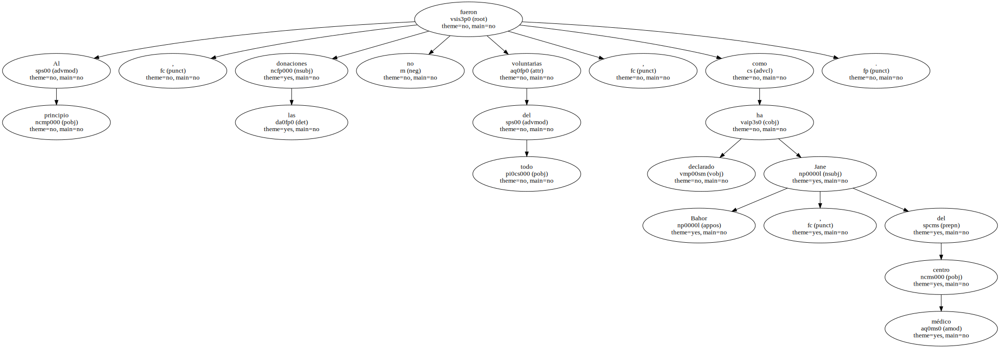
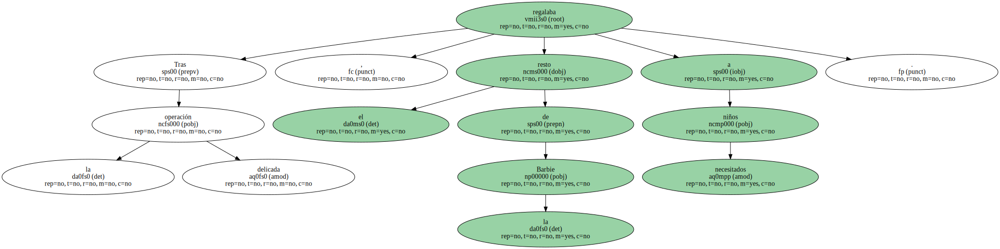

La muñeca Barbie dejará su huella en la historia , no sólo por su longevidad como juguete , sino por la donación de su cuerpo a la ciencia para la fabricación de nudillos destinados a manos artificiales.
El centro médico de la Universidad Duke de Carolina del Norte ( EEUU ) ha llegado a la conclusión de que las articulaciones de Barbie , fabricada por la casa Mattel en California , pueden utilizarse como nudillos para dedos artificiales.

Al principio , las donaciones no fueron del todo voluntarias , como ha declarado Jane Bahor , del centro médico.
Bahor se dedicó a amputar las piernas de la popular muñeca para utilizar sus articulaciones.
Más tarde se dio cuenta de que , aun sin articulaciones en las rodillas , la muñeca era útil como juguete , y se dedicó a extirpar cuidadosamente la pieza necesaria.
Tras la delicada operación , regalaba el resto de la Barbie a niños necesitados.
Tres años después , la muñeca , que acaba de cumplir 40 años de existencia , cuenta con su propia tarjeta de donante voluntario y la casa Mattel comenzó a enviar , de forma gratuita , la articulación buscada.
" Nos hizo mucha ilusión que Barbie no sólo haya servido de diversión a las niñas , sino que pueda ayudar a los adultos que hayan sufrido un accidente " , indicó un portavoz de la casa Mattel.
Barbie , pese a su éxito , ha sufrido fuertes críticas por mantener ciertos estereotipos tanto racistas como machistas , dadas sus marcadas curvas y su TALLA imposible.
Bahor se alegra de que , después de tanto tiempo , " la muñeca haya encontrado su conciencia social ".